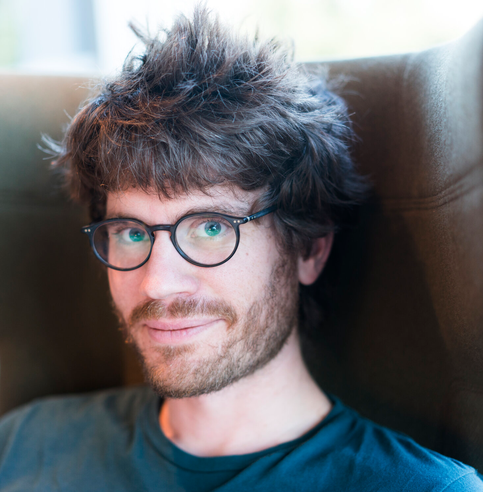
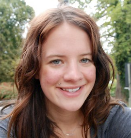

2021 Lecture Series
View/Download Schedule

Thomas Dimson
Lecture Date: 10 Feb
MSc Stanford University (USA)
Director of Engineering at Instagram
Thomas Dimson was one of the first 40 employees at Instagram, back in 2013 when the app was still new. He is the original author of "the algorithm" at Instagram, and was the brain behind how feeds and stories work. He invented Hyperlapse, which is the app that was used for the filming of the music video for "Centuries" by Fall Out Boy. He also invented Instagram products such as stories polling sticker, and emogineering. In 2015 he was named one of the top 10 most creative people in business worldwide, and in 2018 he was promoted from Principal Engineer to Director of Engineering at Instagram.
Dimson earned his MSc in CS from Stanford University, where he specialized in Artificial Intelligence, Natural Language Processing, and Data Mining. Prior to that he earned a triple-degree in Applied Math, Computer Science, and Pure Math at University of Waterloo, and worked at Amazon, Bloomberg L.P. and the Perimeter Institute for Theoretical Physics.
Dimson has over 30 US patents listed on Google Scholar as of January 2021, and several of his publications and patents have acquired an unusually high number of citations.
Contact:


Evan Browning
Lecture Date: 24 Feb
BSc University of Toronto
Senior Software Engineer at Netflix
Evan Browning joined the virtual reality team at Facebook in July 2020, after 5 years as a Senior Software Engineer at Netflix.
Browning completed his computer science degree at University of Toronto, where he also worked as a researcher, and held a job as a GIS Analyst at Ontario's Ministry of Natural Resources.
Contact:
Dr. Brianne Kent
Lecture Date: 10 Mar
PhD Cambridge University (UK)
Professor at Simon Fraser University
Dr. Brianne Kent is a professor at Simon Fraser University, where she runs the Translational Neuroscience Lab and studies how disprupted sleep can contribute to memory loss in people with Alzheimer's patients. She currently sits on the Governing Council of the Canadian Institutes of Health Research.
Dr. Kent was previously a research fellow at Harvard Medical School, and held a postdoctoral position at UBC funded by three simultaneous fellowships including the extremely prestigious Banting Fellowship. She completed her PhD in neuroscience from Cambridge University where she was a Gates Scholar, and also holds degrees from Yale University and Simone Fraser University.
Dr. Kent has published many papers in scientific journals, and as of January 2021 has a Google Scholar h-index of 20.
Contact:

Leonard Zgrablic
Lecture Date: 14 Apr
BSc, BCS University of Waterloo
Software Developer at Google
Leonard Zgrablic is a Software Engineer at Google, working on the Stadia Controller firmware. Previously he held Software Engineering positions at Arista Networks, Clearpath, and Blackberry.
Zgrablic also had a successful career as an actor, director, and writer, having won multiple awards. He was in the cast of Stiffs on the Green (2011), The Cult (2012), and was listed as one of the lead stars in Catalyst (2015)
Contact:
Dr. Ahmed Omran
Lecture Date: 12 May
PhD LMU Munich (Germany)
Artificial Intelligence Researcher at Google
Dr. Ahmed Omran is an Artificial Intelligence resident at Google.
Dr. Omran previously worked at Harvard University in the Physics Department, and as a Research Consultant for QuEra Computing in Boston. His PhD is from LMU Munich where he also worked at the Max Planck Institute of Quanum Optics. He also holds Bachelor's and Master's degrees from TU Munich.
Dr. Omran has 3 publications in Nature, 3 publications in Science, and 5 publications in Physical Review Letters as of January 2021 and 100% all of his publications prior to 2020 have over 100 citations. His paper with Mikhail Lukin involving an in-house 51-qubit programmable quantum computer reached 1000 citations on Google Scholar after 3 years.
Contact:

Genevieve Laurier
Lecture Date: 16 Jun
MSc Oxford University (UK)
Managing Director at The Social Innovation Partnership
Genevieve Laurier is the Managing Director at The Social Innovation Partnership, having previously been Director of Delivery and Impact, Head of Delivery and Impact, and Acting Head of Impact and Evaluation.
Laurier was also previously the President of Oxford Hub, which had over 5000 individual members and 80 institutional members.
Laurier holds an MSc from Oxford University where she wrote a thesis about sexual minority topics in the sex education at schools, and a bachelor's degree in PPE, also at Oxford University.
Contact: